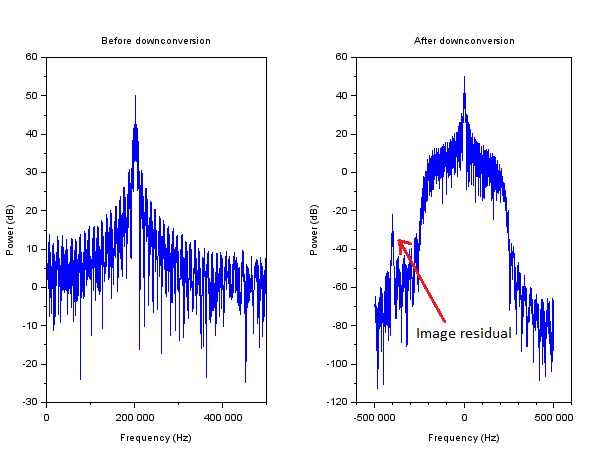

Description
If the input signal is complex, no image filtering is down.
If the input signal is real, image is removed with a low-pass filter
with cut-off frequency set to  if
if  , and otherwise,
where
, and otherwise,
where  is the normalized intermediate frequency
(in either case, half-way between baseband signal and image signal).
is the normalized intermediate frequency
(in either case, half-way between baseband signal and image signal).
Example 1: downconversion of a BPSK complex signal (without image filtering)
[x,fs,fi,fsymb] = sct_test_signal('c');
;
dn = downconvert_init(fi/fs,'c');
[dn,y] = downconvert_process(dn,x); |  |  | |
Scatter plot view:

Frequency view:

Example 2: downconversion of a BPSK real signal (with image filtering)
[x,fs,fi,fsymb] = sct_test_signal();
;
dn = downconvert_init(fi/fs,'r');
[dn,y] = downconvert_process(dn,x); | | | |
Scatter plot view:

Frequency view:
